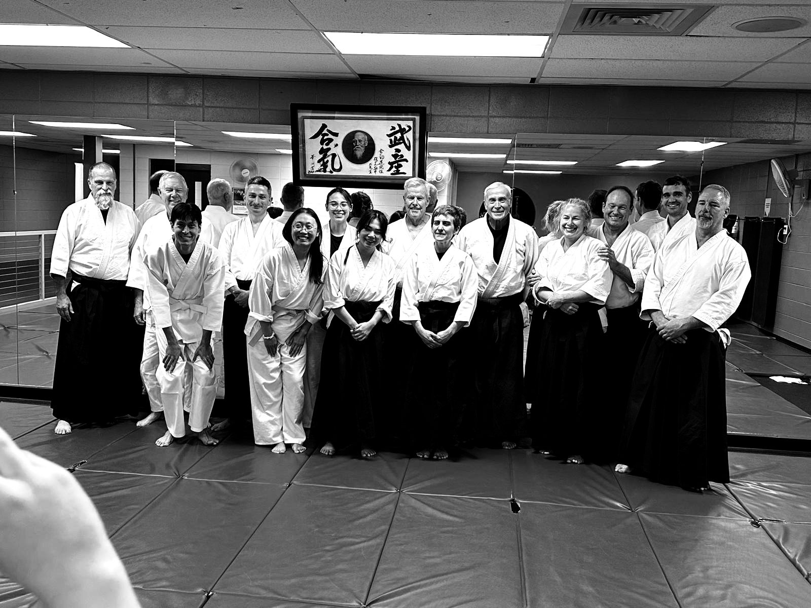
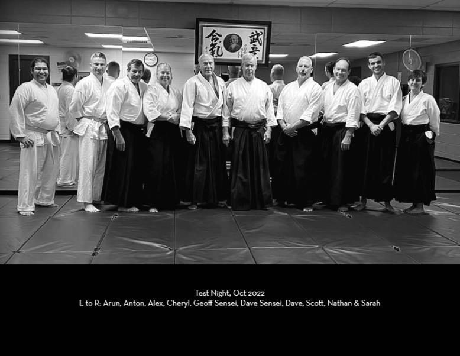

Rocky Mountain Aikikai
Traditional aikido in Centennial, Colorado. Beginners, experienced students and visitors from other dojos are welcome on the mat.
Tuesdays and Thursdays, 6:30 to 8:30 PMGoodson Recreation Center, 6315 South University Blvd.
What we practice
Aikido is a Japanese martial art founded by Morihei Ueshiba. Instead of meeting force with force, you learn to blend with an attack and redirect it, using throws, pins and controlled falls.
There are no competitions. Partners take turns, and everyone trains at a pace that keeps them safe, whatever their age or experience. Classes also include work with the wooden sword (bokken) and staff (jo).

Our instructors
Classes are led by Dave Marlow and Geoff Goodman, who between them have practiced with Rocky Mountain Aikikai since the 1980s and 90s, along with a group of long-time black-belt associate instructors.